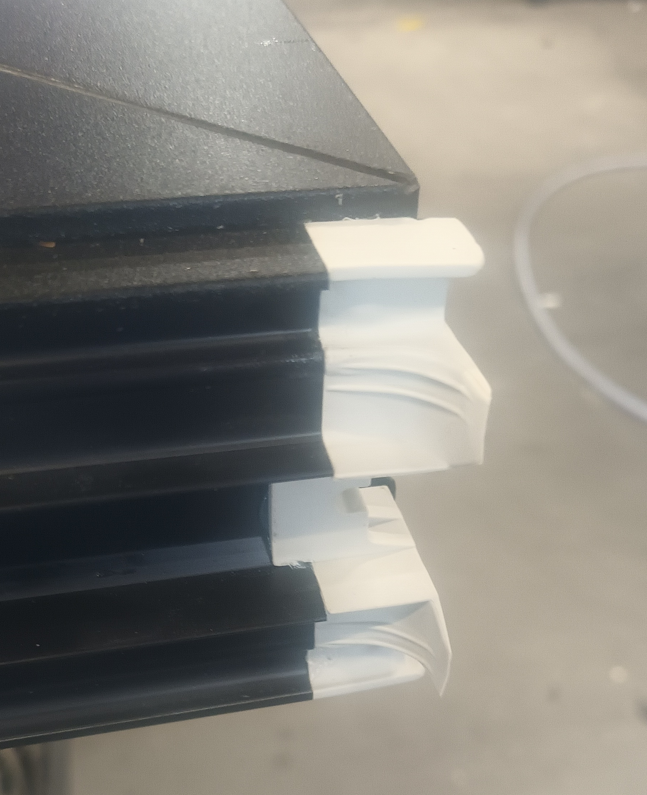

85
Labiryntowka dlugosc jednakowa w obu skrzydlach,
tylko w jezdnym gora ucieta pod katem 20 stopni
Otbojnik - 25mm, 45mm
NIZKA SZYNA: - podkladka pod wozek 8mm
3 - SKRZYDLOWKA:
Jeden fix zwykly, drugi, ze strony zasuwnicy dajemy listwe dla zaczepow, krore przykrecaja na skladaniu.
Z dolu do listwy dajemy gabke, narowno z uszczelka,
Z gory tez dajemy gabke
Jeszcze nie robilem
4 - SKRZYDLOWKA:
Dwa fixy zwykle, jezdne ACTIVE zwykle.
W skrzydlie pasywnym dajemy listwe, ktora zakrywa zasywnice,
gore frezujemy.

Z dolu wkladamy gabke jak narysunku nizej
Podwyszony poziom
Przedlozka moze byc cieta: 320cm
w zaleznosci od wysokosci skrzydla
Resultat:67